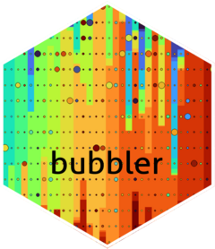

Arrange a variable by the ordering of another variable
arrange_var.RdArrange a variable by the ordering of another variable
Examples
rel_abund_phy(phy = physeq, meta_data = TRUE) %>%
arrange_var(levels = "Location")
#> Warning: There was 1 warning in `dplyr::mutate()`.
#> ℹ In argument: `sample_id = forcats::fct_relevel(sample_id, levels)`.
#> Caused by warning:
#> ! 1 unknown level in `f`: Location
#> # A tibble: 1,000 × 9
#> sample_id asv level taxon rel_abund depth location date sample_id.1
#> <fct> <chr> <chr> <chr> <dbl> <int> <chr> <date> <chr>
#> 1 Smp1 ASV1 Phylum Pseud… 2.12e-6 30 place_b 2020-02-17 Smp1
#> 2 Smp1 ASV2 Phylum Spiro… 6.35e-6 30 place_b 2020-02-17 Smp1
#> 3 Smp1 ASV3 Phylum Pseud… 1.68e-3 30 place_b 2020-02-17 Smp1
#> 4 Smp1 ASV4 Phylum Pseud… 1.91e-5 30 place_b 2020-02-17 Smp1
#> 5 Smp1 ASV5 Phylum Actin… 2.12e-5 30 place_b 2020-02-17 Smp1
#> 6 Smp1 ASV6 Phylum Actin… 2.68e-3 30 place_b 2020-02-17 Smp1
#> 7 Smp1 ASV7 Phylum Pseud… 6.14e-5 30 place_b 2020-02-17 Smp1
#> 8 Smp1 ASV8 Phylum Bacil… 0 30 place_b 2020-02-17 Smp1
#> 9 Smp1 ASV9 Phylum Pseud… 0 30 place_b 2020-02-17 Smp1
#> 10 Smp1 ASV10 Phylum Bacte… 2.12e-6 30 place_b 2020-02-17 Smp1
#> # ℹ 990 more rows